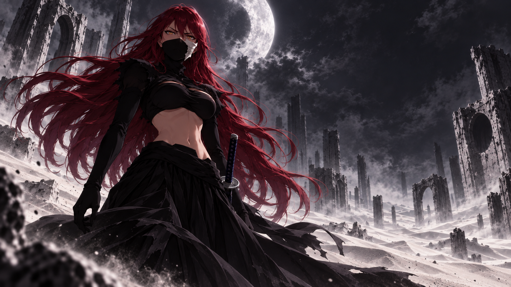
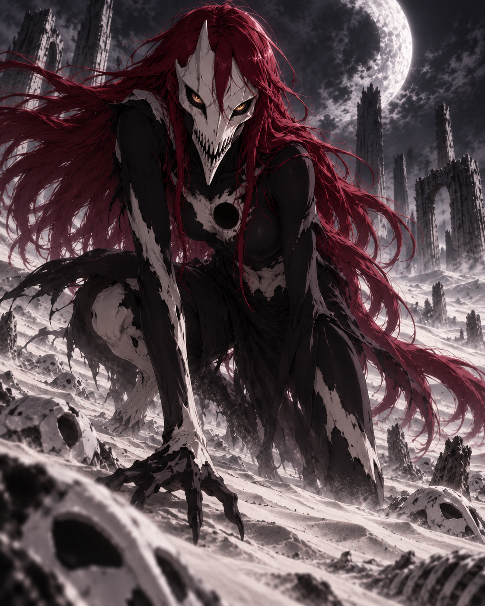
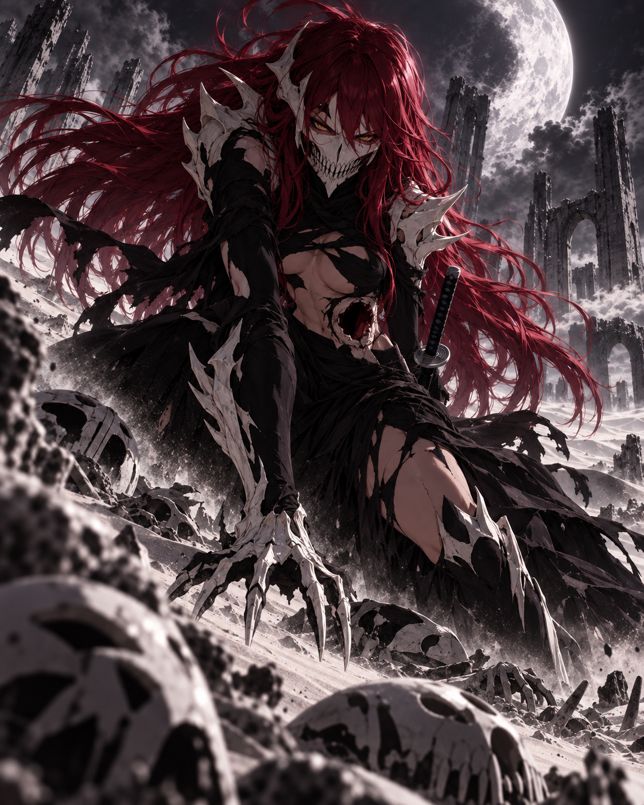
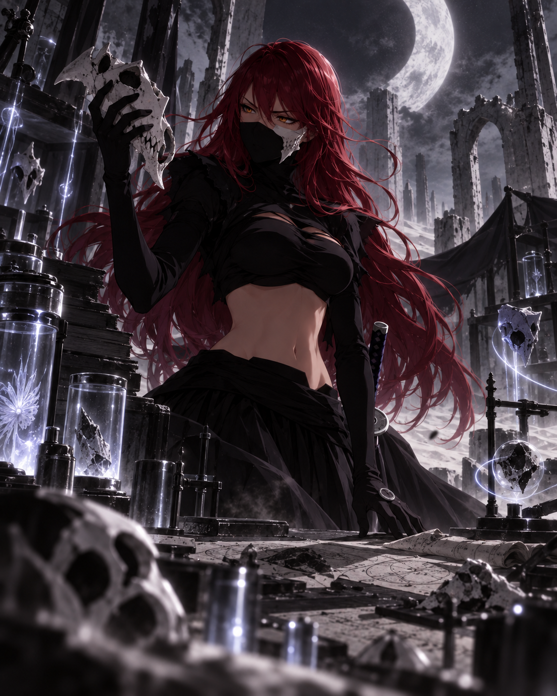
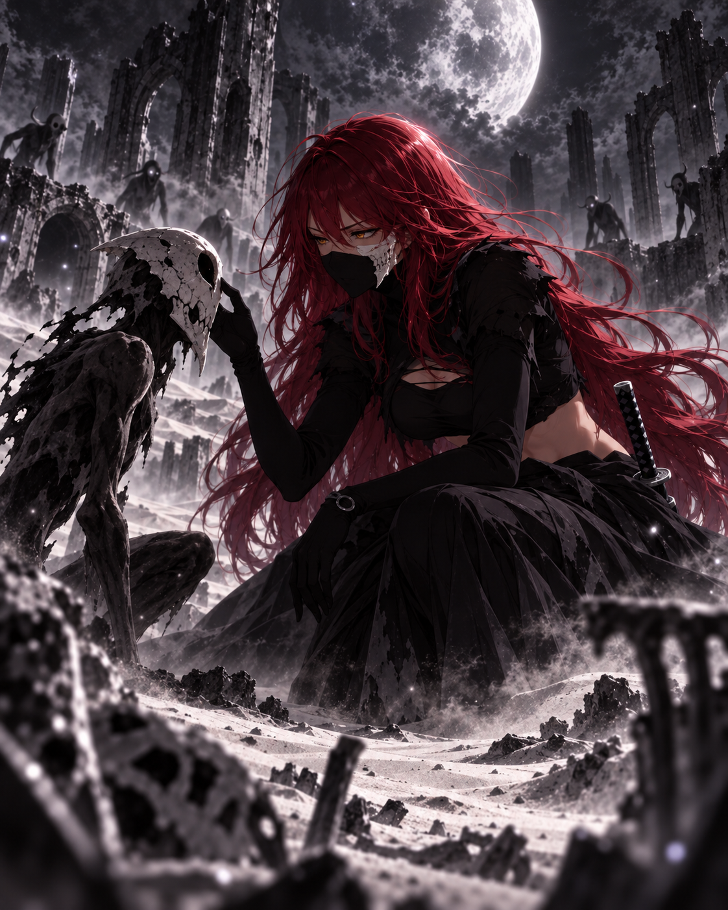
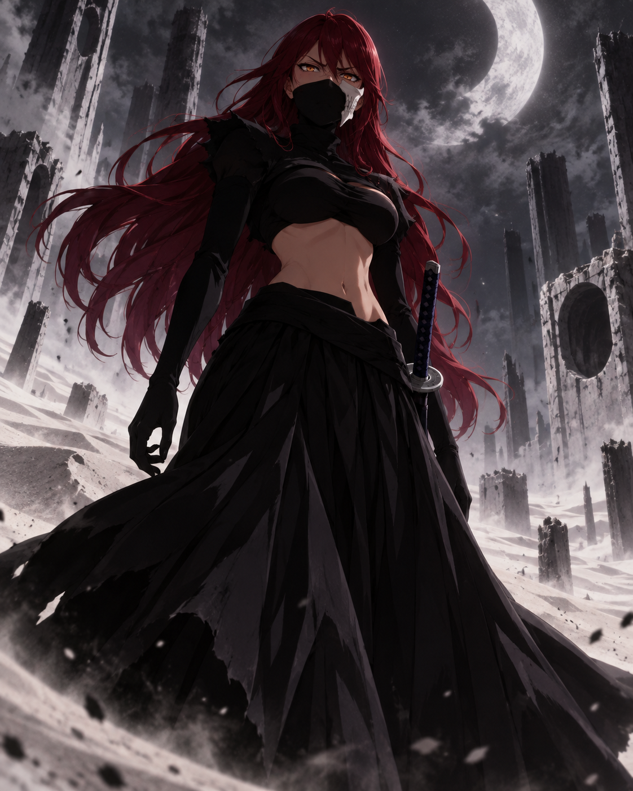
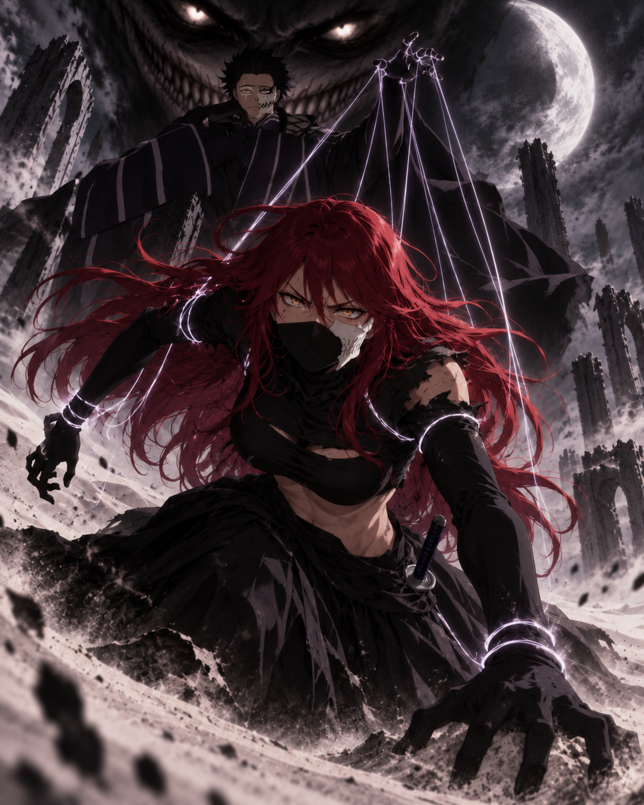
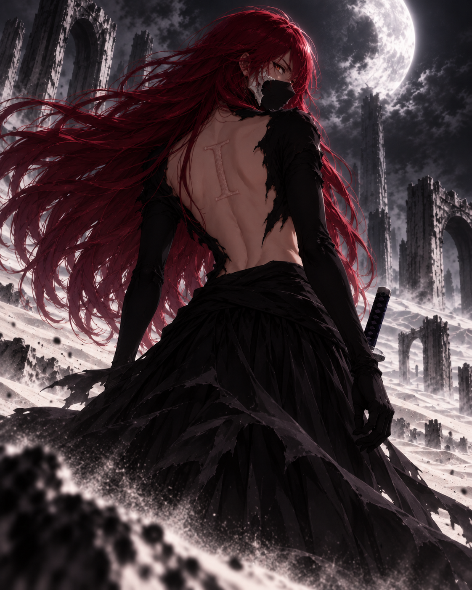
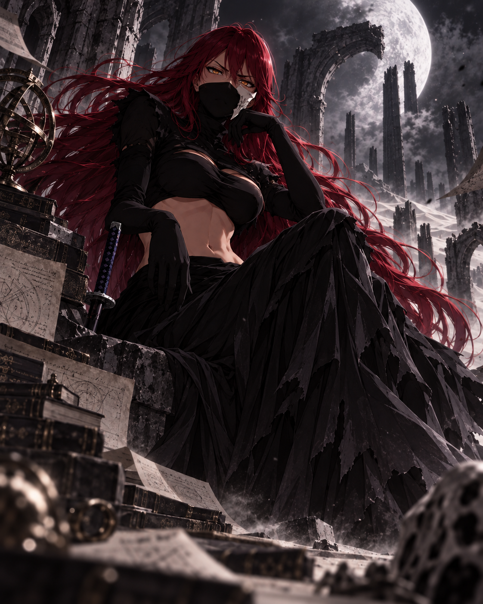

ERISAKERIA
Elle ne cherche pas seulement à devenir plus forte. Elle veut comprendre : les Hollows, leurs émotions, les mécanismes de l'âme et ce qui subsiste de son propre passé. Depuis que l'Insatiabilité s'est éveillée en elle, chaque réponse ouvre une question supplémentaire.

Une émotion.
Rien d'autre.
De sa vie humaine, Eris ne possède aucune image. Aucun visage, aucun lieu, aucun objet, aucun repère visuel.
Il ne lui reste qu'une émotion. Une sensation ancienne, isolée de tout contexte, dont elle ne connaît ni la cause ni l'origine.
Elle ne peut pas reconstruire une scène autour d'elle. Cette émotion est simplement là, comme la seule preuve qu'il existait quelque chose avant le Hollow.
Dévorer pour
continuer d'exister.
Eris apparut d'abord comme un Hollow dominé par l'instinct. Dans le Hueco Mundo, survivre signifiait chasser, absorber et évoluer.
Mais la faim n'effaça pas tout. À mesure qu'elle avançait, elle observa davantage. Elle retint des comportements. Elle commença à distinguer ce qui relevait de l'instinct de ce qui ressemblait déjà à un choix.


Quand l'instinct
devint pensée.
Chaque étape lui donna davantage de puissance, mais surtout davantage de conscience de ce qu'elle ignorait.
Hollow, puis Gillian, Adjuchas et Vasto Lorde : plusieurs âmes et instincts pouvaient se mêler au cours de l'évolution. Eris, elle, commença progressivement à analyser ce qui l'entourait au lieu de seulement y réagir.
À un stade avancé, elle apprit à parler. Les sons devinrent des mots ; les mots, des questions. Une fois devenue Arrancar, elle possédait enfin les outils nécessaires pour transformer sa curiosité en recherche.
La science
comme langage.
À Las Noches, Eris trouva une discipline capable de donner une forme à son besoin de comprendre : la section scientifique.
Elle observe, compare, expérimente et cherche des mécanismes reproductibles. Les Hollows ne sont pas pour elle de simples sujets à mesurer par leur force : leurs réactions, leurs émotions et leur capacité à apprendre sont tout aussi importantes.
Son calme lui permet de rester assez longtemps devant un phénomène pour remarquer ce que d'autres auraient ignoré.


Un Hollow silencieux
est-il vraiment vide ?
Eris veut prouver que n'importe quel Hollow peut être plus intelligent que ce que laisse croire son instinct primitif.
Elle étudie autant ceux qui parlent que ceux qui en sont incapables. Le langage n'est qu'un moyen d'expression : l'absence de parole ne suffit pas à prouver l'absence de pensée, d'émotion ou de décision.
Elle observe les réactions à la peur, à la colère, à la douleur, à l'attachement et aux changements d'environnement. Une bague de communication utilisée par la scientifique pourrait également permettre de tester ce qu'un Hollow comprend lorsqu'un moyen de communiquer lui est offert.
Primera.
Eris a atteint le rang de Primera. Une reconnaissance importante qui, pour elle, n'a rien d'une conclusion.
Après Tercera puis Segunda, sa promotion au rang de Primera lui donne davantage de responsabilités, d'accès et de possibilités d'expérimentation.
Chaque échelon conquis élargit surtout le champ de ce qu'elle sait ne pas encore connaître. Un sommet devient simplement un meilleur point de vue sur la prochaine limite.

Sous la
Gourmandise.
Eris occupe la place de péché mineur de l'Insatiabilité sous les ordres de Julius Lowneur — L'Ogre de la Gourmandise.
Chez elle, le péché ne prend pas la forme d'une faim de nourriture. Il s'accroche à quelque chose qui existait déjà : son besoin d'apprendre, de comprendre, d'expérimenter et de progresser.
Ce désir ne se contente pas d'un résultat. Une réponse trouvée peut la satisfaire un instant, puis le manque revient sous une autre forme.


Le I
dans son dos.
La marque de l'Insatiabilité inscrit physiquement ce besoin qui ne possède aucun point de saturation.
Depuis son apparition, le manque se fait plus présent. Une réponse obtenue appelle immédiatement la suivante. Une limite comprise devient une limite à dépasser.
Son effet secondaire physique connu reste distinct du reste : des migraines récurrentes, qui peuvent devenir plus fortes lorsque l'Insatiabilité est fortement sollicitée.
Eris
l'Insatiable.
La curiosité ne suffit plus à décrire ce qui la pousse. Son besoin ne connaît plus de véritable point final.
La connaissance appelle davantage de connaissance. La puissance appelle davantage de puissance. Même un objectif atteint devient rapidement le début d'un autre.
Le vide ne disparaît pas. Il change simplement de forme. C'est ainsi qu'Eris l'Insatiable prend réellement sens : elle peut être satisfaite un instant, jamais rassasiée.
Une voix
qui réclame plus.
À mesure que l'Insatiabilité gagne en présence, une seconde voix apparaît dans l'esprit d'Eris.
Elle contraste avec son tempérament calme : plus aiguë, rieuse et agressive, elle s'attaque directement à ses faiblesses et transforme chaque insuffisance en provocation.
« Tu es faible. Tu n'es rien. » Elle pousse Eris à continuer, à apprendre davantage et à ne jamais considérer une victoire comme suffisante.
Calme en surface.
Affamée derrière le regard.
Aujourd'hui, Eris est Primera de la section scientifique et péché mineur de l'Insatiabilité.
Elle poursuit ses recherches sur les Hollows, leur intelligence, leurs émotions et leurs souvenirs. Elle veut comprendre son évolution, maîtriser ce que le I amplifie en elle et repousser les limites de ses connaissances.
Au centre de tout subsiste la même énigme : cette unique émotion venue d'une vie dont elle ne possède absolument aucune image.

RIEN N'EST
SUFFISANT.
Une scientifique peut chercher une réponse. Eris cherche ce qui se trouve derrière la réponse.